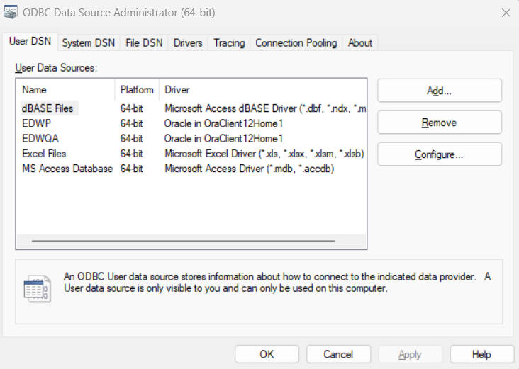
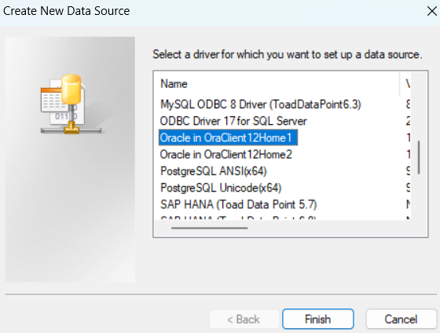
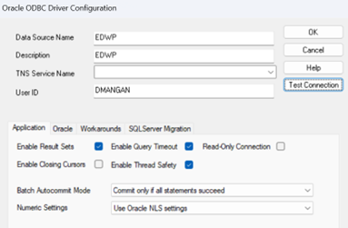
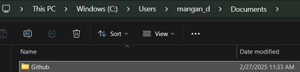
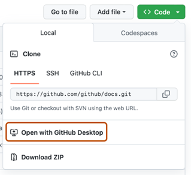
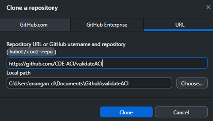

CDE R/Git Setup Guide
Introduction
Welcome to the CDE Data Guide! This document is intended to describe procedures used to set up R studio and the GitHub repositories used by CDE’s ACI team. After completing this process, you should be able to access and run scripts that pull data from CDE’s warehouse (WH) directly through R Studio.
Outline of Steps
Steps Requiring Admin Privileges
- Install R
- Install RTools (optional but recommended)
- Install R Studio
- Install Git
- Install Github Desktop (optional but recommended)
- Create Connection to CDE Data Warehouse
Steps Not Requiring Admin Privileges
- Create GitHub Account
- Create Local Folder for Code Repositories
- Clone a Repository from GitHub
- Principles of Version Control Using Git
- Install R Packages
- How to Install Packages
- Overview of Required Packages
- Using RENV
- Set Up keyring Package
- Query Data from Warehouse
- Overview of CDE Code Repos
Install R
R is the programming language that R Studio is based on. It needs to be installed separately before installing R Studio, which is the IDE (“Integrated Development Environment”) most commonly used with the R language.
As a note, you do not need R Studio to use R. It can also be run through the R console or other IDEs such as VS Code or Positron. However, R Studio is probably the most intuitive and stable way to use R currently. This guide will focus on using R through R Studio.
You can access installation files for R here.
Updates to R are typically available a couple times each year. It’s a good idea to periodically update R, although in some cases this will require you to reinstall packages.
Install RTools
RTools is a set of additional tools used for package development and other advanced tasks in R for Windows. This step is not strictly necessary for most tasks, but it is needed in order to install packages developed by the CDE team directly from GitHub, so you might as well take care of it before installing R Studio.
You can download and install RTools from here.
Install R Studio
R Studio is the coding environment (or IDE) most commonly used with the R language.
- Installation files for R Studio Desktop are available here.
- Once installed, R Studio should detect your R installation automatically.
- You may want to consult this useful Getting Started Guide for R Studio to understand the basic layout and workflow.
Install Git
Git is a distributed version control system that helps you track and manage changes to files over time. In simple terms, it:
Tracks Changes: Git keeps a detailed history of every change made to your files, allowing you to see what was modified, when, and by whom.
Supports Collaboration: Because every contributor has a complete copy of the project history, multiple people can work simultaneously on the same project without overwriting each other’s work.
Enables Experimentation: With features like branching, you can create separate lines of development (for example, for new features or experiments) without affecting the main project. Once you’re satisfied, you can merge those changes back into the main branch.
Enhances Recovery: If something goes wrong, you can easily revert your project to a previous, stable version, reducing the risk of losing work.
GitHub is the platform built around Git, somewhat (though not exactly) like how R Studio is built around R.
Git installation files can be accessed here. Default settings during installation should work fine.
Install GitHub Desktop
Although it’s not strictly necessary to use the desktop version of GitHub’s platform, it’s relatively intuitive and easy to navigate. R Studio and most other IDEs also support Git within their software, and you can also use command line prompts to synchronize via Git, but GitHub desktop provides a graphical interface that may be more convenient.
Download GitHub Desktop here and follow instructions to install. You will finish setting this software up after you create a GitHub Account (see below).
Create Connection to Data Warehouse
This step allows applications such as R Studio to communicate with the Oracle Database that comprises CDE’s data warehouse.
- Open ODBC Data Source Administrator – 64 Bit on your laptop (search for it using the Start menu) and click “Add”.

- Choose Oracle in OraClient 12Home1 driver.

- Click Finish and add info for the data source you want to connect to (e.g., EDWP, EDWQA, etc). Type the User ID that you use for Toad, then click Test Connection.

- Enter Service Name (e.g., EDWP) and Password, then OK. This should complete the connection.
- Add a separate connection for each data source that you will be needing to access (e.g., EDWP, EDWQA, EDWD, etc).
Create Local Folder for Repositories
To store your GitHub repos, you should create a folder named “Github” that is in your Documents folder but NOT on your OneDrive. In other words, this folder should be on your local drive in a place that is not synched via OneDrive. This is because GitHub takes care of synching, and you do not want OneDrive also managing the synching process separately.
Note that you actually have two Documents folders on your machine. Most likely, the one you typically use is synched via OneDrive. You can tell by looking at the file path in File Explorer. If the path says “OneDrive” and/or “<username> – CDE Colorado”, then this is NOT the folder you want to use for GitHub (see below).
You can navigate to your local drive using the file path shown below (but with your username). Here you can see the full file path for my local Documents folder. You should add this location to your quick access bar so it’s easy to get to. Create your Github folder here. This is where all cloned repositories will be stored.

Clone GitHub Repo(s) to Your Local Folder
If you’re new to GitHub, you may want to read this helpful resource that explains the basics of a repository (“repo”) and some associated terminology.
You will access and collaborate with code by cloning a repository to your local Github folder. Cloning a repo means that all files in the repository are copied to your local machine and then monitored by Git for any changes you or others make to the code.
There are several ways to clone and manage a Repo. Most IDEs such as R Studio can handle version control using Git within the app, but I find GitHub Desktop to provide the most intuitive interface, even if it means using a separate app. Further, if there are conflicts between code versions that need to be resolved, this is much easier in GitHub desktop. You can set up multiple systems, including using command line prompts in Git bash or the terminal. It’s up to you what you use, but I will provide instructions here for GitHub Desktop as I think it’s the easiest place to start.
Follow these steps to clone an existing repo to your machine.
- Sign into GitHub in your browser and in GitHub Desktop
- In the browser, navigate to the main page of the repo.
- Above the list of files, click <> Code
- Click Open with GitHub Desktop

- This will open a window in your GitHub Desktop app. Next, click Choose and navigate to the local GitHub folder you created in the prior step. The path should look like my example but with your username. Then click Clone.

- Each repo you clone or create will have its own folder within the local Github folder that you created on your machine. Repos may also have project folders within them. There are a variety of theories on how to organize repos. If a project is sufficiently large and distinct from other projects, it may warrant a separate repo. For quick one-off analyses and explorations, I prefer to use a single repo that contains separate projects. Note that developing an R package requires its own repo. I don’t cover creating a new repo here, but you can find plenty of information within GitHub documentation.
Basic Principles of Version Control using Git
IMPORTANT: Git should only synchronize code (text files), never data. Project folders in your repos will often contain data files, but these should be ignored by Git and not synced. This is accomplished through “.gitignore” files that exist in every repo (and often in individual projects). These files tell Git what files and folders to ignore when syncing. Typically, you won’t need to worry about altering the .gitignore files, but if you notice that GitHub Desktop is trying to sync a file that isn’t code (e.g., data, pdf files, etc.), then you can add code to .gitignore as needed.
When you make changes to code, these are not automatically synced to the main repository on GitHub. At first, they exist only on your local machine. In order to be synced to the repo, changes must first be committed and then pushed.
Below is a basic outline of the process for working with code using Git. You should do this frequently to avoid being out of sync with the main repo if other collaborators are also making changes! Note that you can do a lot with GitHub…this is just the most basic workflow:
- Fetch Latest Changes: Before starting work on a project, make sure you have the latest changes to the main repo synced with your local machine. Click the Fetch origin button to check for and download any updates from the remote repository.
- Review Local Changes: GitHub Desktop displays modified, added, or deleted files in the left panel, allowing you to review differences using the built-in diff viewer.
- Commit Your Work: Whenever you make changes to code, GitHub desktop will sense them and provide an overview of what files have been changed. When you’re ready to send a batch of changes to the remote repo, enter a descriptive commit message in the commit summary box in GitHub Desktop and click Commit to [branch name] to save your changes locally.
- Push Your Commits: Once you’ve committed your changes, click Push origin to update the remote repository with your work.
Install R Packages
R packages are collections of functions, data, and documentation that extend the capabilities of R. They make it easy to perform specialized tasks—like data visualization, statistical modeling, or working with specific data formats—without having to write all the code from scratch.
How to Install and Load Packages
You can install packages separately or together using the install.packages command. To install more than one at once, simply concatenate them. Quotes are needed for package installation, as you see below. You generally will only have to install packages once, but they have to loaded for use in each project.
install.packages("tidyverse") # install one package at a time
install.packages(c("tidyverse","keyring")) # install multiple packages at onceTo load a package, use the library command without quotes around the package name. Note that you cannot load multiple packages as once by concatenating them as in the example above. One option is to load packages separately, as below:
library(tidyverse)
library(keyring)Another option is to create a vector of package names then use lapply to load them, as seen here:
packages <- c("tidyverse", "keyring")
lapply(packages, library, character.only = TRUE)Note: In some cases you won’t see packages loaded at the start of an R script. This is typically because the packages are being loaded behind the scenes. For example, in a project using renv
Overview of Required Packages
At a minimum, the keyring package and either DBI/ODBC or RODBC are required to access warehouse data. The other packages on this list are used commonly across projects.
keyring: this package manages login credentials so that they do not appear in any syntax files synced to GitHub.DBI: a database interface package used in more recent CDE scripts to access the database directly through the connections pane in R Studio. Using this package, a connection is opened to the database and separate SQL scripts are read into R to pull data. These SQL scripts typically exist in the “src” folder of a R project. More on this setup can be found below.ODBC: an efficient interface for Open Database Connectivity (ODBC) drives. Works in conjunction with theDBIpackage to query data using SQL scripts.RODBC: this package is used in some older projects to access the database by including a SQL query directly in the R script. We have moved away from this strategy in favor of usingDBIto connect dynamically to the database and maintain SQL scripts in separate files, but some older code may not yet be updated.renv: used to create reproducible environments for R projects. Earlier projects in the ACI-Syntax repo do not use renv, but more recent projects typically do unless they are short, one-off analyses. See below for more info on usingrenv.tidyverse: this is a collection of packages designed for data science that share underlying structure and grammar. Nearly every file in our CDE repos relies on tidyverse packages. Commonly used packages that are part of tidyverse includeggplot,dplyr,stringr,readr, &tidyr. You can install and load these individually, but I find it’s best just to load the entiretidyverse.
Using renv
renv stands for “R environment” and is a package designed to manage and ensure reproducibility of R projects by tracking and isolating project-specific package dependencies. It creates an isolated project environment that captures the exact versions of packages you’re using, allowing you and others to consistently recreate the environment and avoid conflicts caused by different package versions. All packages needed for a project are installed (if needed) and loaded with a single command. Using renv, you can easily snapshot your current package setup, restore packages exactly as recorded, and share your project knowing it will reliably run in other locations, which serves the ultimate goal of enhancing collaboration and reproducibility in R workflows.
You do not have to use renv, but most recent projects in the CDE repos currently use it, and it must be installed in order to work in those projects.
We have developed a specific project structure using renv that will be described later in this document. Below is a condensed version of this. You may want to do some background reading on renv here.
R projects that use renv are in their own folder within the repo and they should have a source folder called “src”. Within this is folder is a file called lib.R. At the top of most R files in a renv project, you will see that this library file is sourced at the top of the file, as seen below:
source("src/lib.R")Part of this library file is the renv::restore command that loads the environment and a series of library commands that load required packages.
Set Up keyring Package
The keyring package is used to avoid having login credentials in plain text in script files. This package uses the Windows (or MacOS) credentialing system to access the necessary tokens, meaning that you unlock the keyring when you log into your machine. keyring enables the same syntax to be used across machines as long as the user has properly set up their keyring with their own login credentials.
The setup process is simple and only needs to be done once (unless your credentials change).
It is strongly recommended that your credentials be the same for each warehouse environment you use (e.g., EDWQA, EDWP, etc). The process here is designed to work this way. It is possible to have different username/password combinations, but that will entail alterations to the setup code and the code used to connect to the database.
You only need to run three lines of code, shown below. There is also a
keyring_setup.Rfile with this code in the ACI-Syntax repository. Running each line of this code will bring up an API window in R Studio that asks for your credentials. After running this code once, your credentials will be accessed by R whenever you connect to the warehouse.
library(keyring)
keyring::key_set("WAREHOUSE", "uid", prompt = "Username")
keyring::key_set("WAREHOUSE", "pwd", prompt = "Password")Query Data from CDE Warehouse
The process below describes our most recent method for pulling data from the warehouse into R.
- Open a connection to the warehouse. This code uses
dbConnectfrom theDBIpackage as well asodbc. Username and password are retrieved using thekeyringpackage so that they do not appear in your scipt.
con <- dbConnect(odbc(), dsn = "EDWQA",
uid = key_get("WAREHOUSE", "uid"),
pwd = key_get("WAREHOUSE", "pwd"),
timeout = 10)- Write a separate script with the SQL query. These are usually stored in the “src” folder withing the project. Many of these SQL queries can be used across projects, so I find it helpful to maintain a folder of SQL scripts that I can draw from when needed. When pulling from multiple tables, you can perform joins either in SQL or in R. I typically use R to join data unless running the join in SQL means having to pull substantially less data from the warehouse.
-- this script is saved in a file named ada_sch.sql
SELECT ADA_SCH_BY_YEAR.DASY_KEY,
ADA_SCH_BY_YEAR.DDST_DIST_NUMBER,
ADA_SCH_BY_YEAR.DDST_DISTRICT_NAME,
ADA_SCH_BY_YEAR.DSCH_SCHOOL_NUMBER,
ADA_SCH_BY_YEAR.DSCH_SCHOOL_NAME,
ADA_SCH_BY_YEAR.DSCH_GRADE_SPAN_LOW,
ADA_SCH_BY_YEAR.DSCH_GRADE_SPAN_HIGH,
ADA_SCH_BY_YEAR.ALT_ED_CAMPUS_YN,
ADA_SCH_BY_YEAR.ONLINE_YN,
ADA_SCH_BY_YEAR.MAGNET_YN,
ADA_SCH_BY_YEAR.CHARTER_YN,
ADA_SCH_BY_YEAR.INNOVATION_YN,
ADA_SCH_BY_YEAR.HOME_SCH_OPTIONS_YN,
ADA_SCH_BY_YEAR.SETTING,
ADA_SCH_BY_YEAR.REGION
FROM EDW_DATA_MART.ADA_SCH_BY_YEAR ADA_SCH_BY_YEAR
WHERE ((ADA_SCH_BY_YEAR.DASY_KEY BETWEEN 2016 AND 2024)
AND (ADA_SCH_BY_YEAR.INCLUDED_ACCREDITATION = 1))- Create a new R object using the connection you made in the first step and the SQL file you created in the second step. This will result in an R data frame object containing the data from your query!
df_sch <- dbGetQuery(con, readLines("src/ada_sch.sql") |> paste(collapse = "\n"))